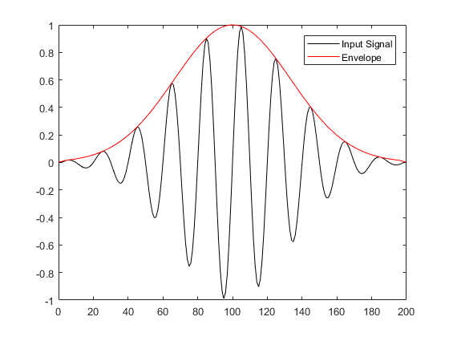

envelopeDetection
Extract signal envelope using the Hilbert Transform.
Syntax
env = envelopeDetection(x)
Description
envelopeDetection applies the Hilbert transform to extract the envelope from an input vector x. If x is a matrix, the envelope along each row is returned. For example, running the code
% create tone burst x = toneBurst(10e6, 0.5e6, 10); % plot tone burst and envelope figure; plot(0:length(x) - 1, x, 'k-', 0:length(x) - 1, envelopeDetection(x), 'r-'); legend('Input Signal', 'Envelope');
produces the output
Inputs
x |
input function |
Outputs
env |
envelope of input function |
See Also
fft